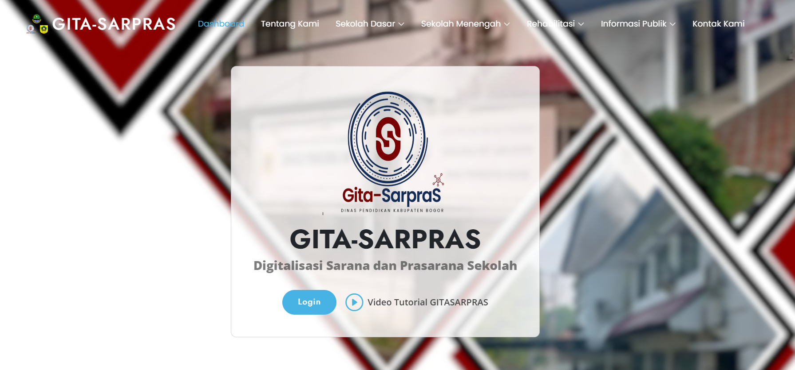
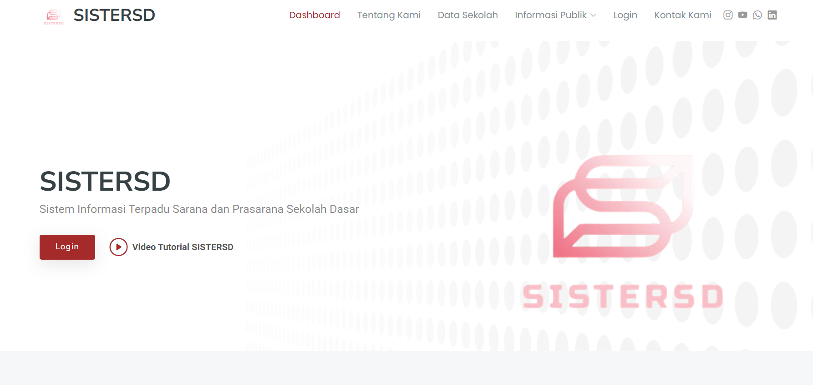
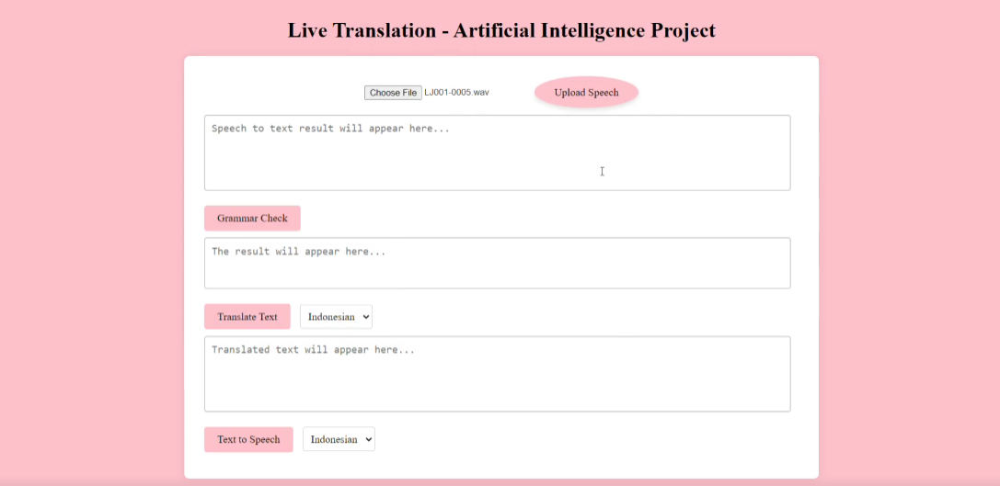
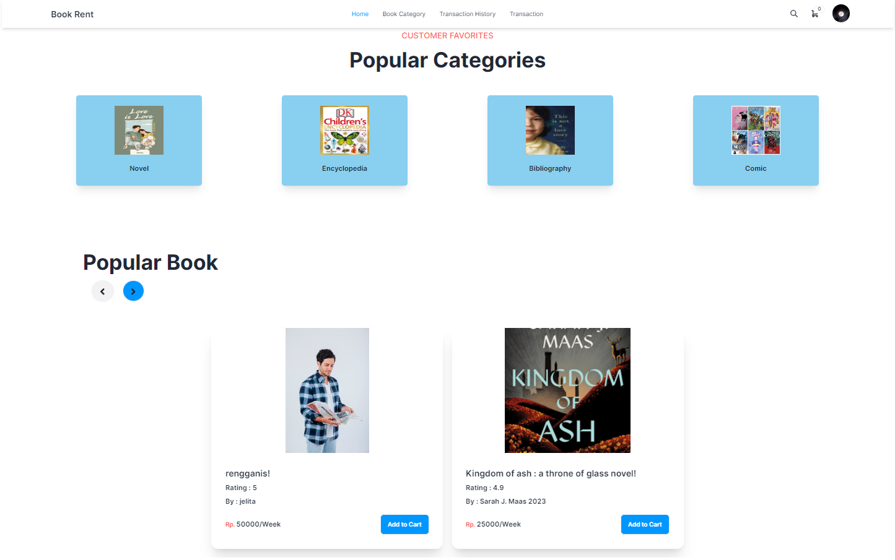
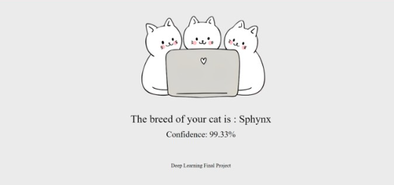
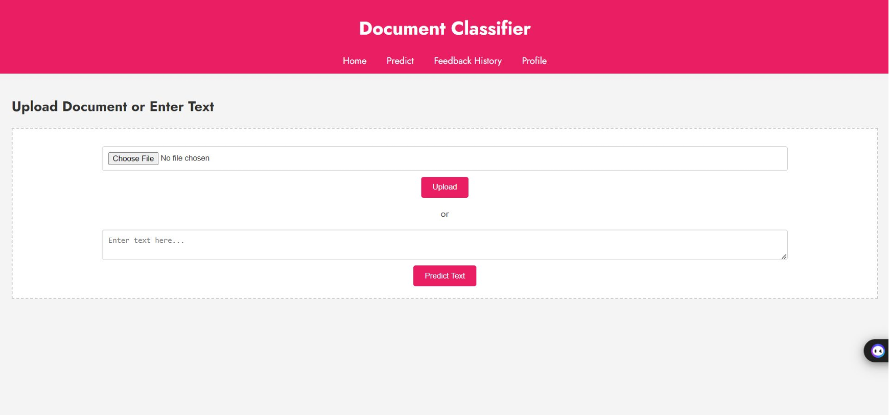
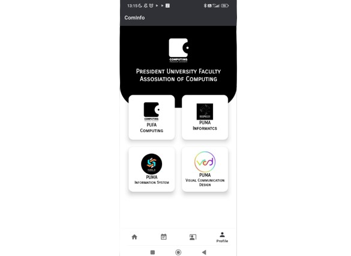
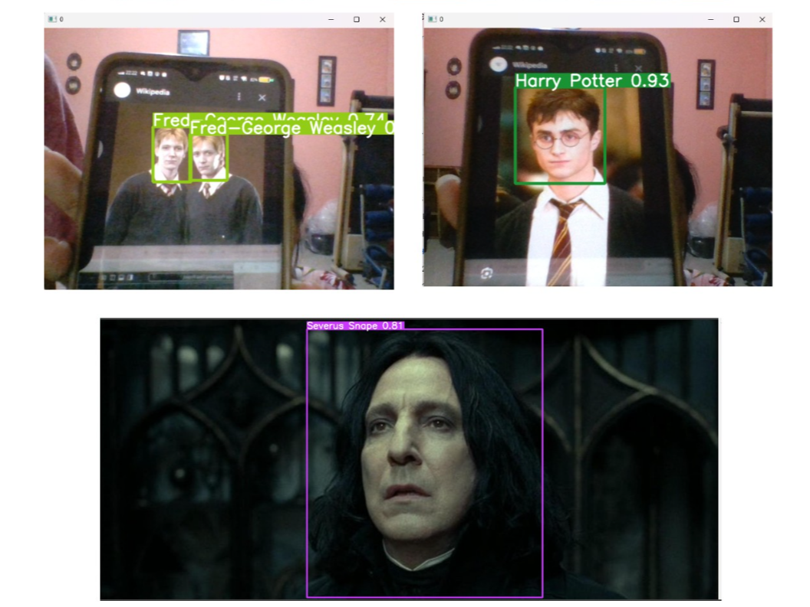
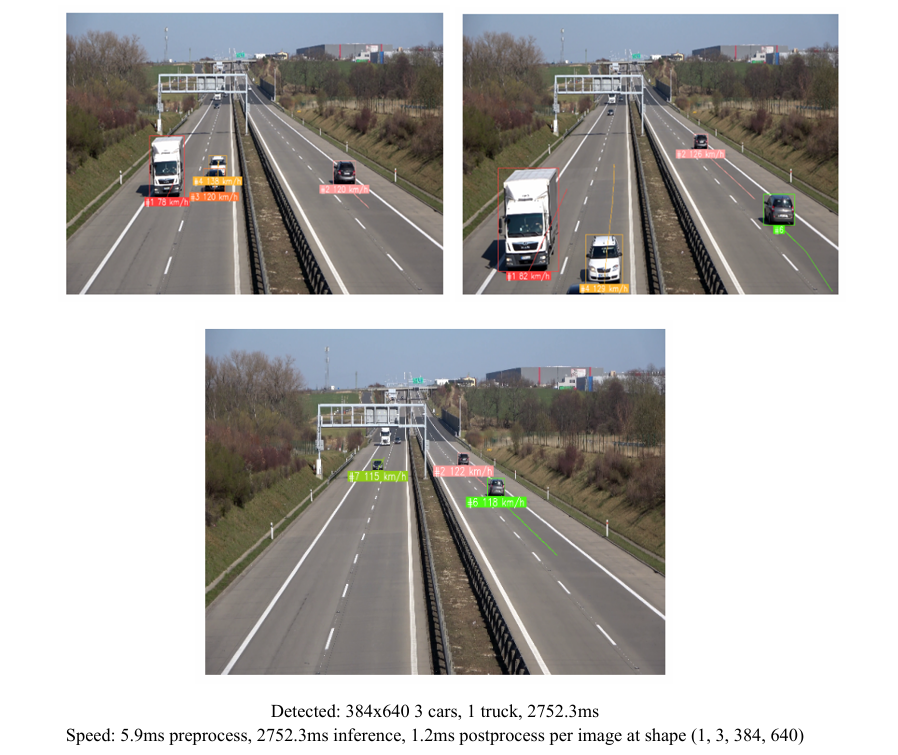

Artificial Intelligence - Web Developer - Software Engineering









I am an enthusiastic third-year Informatics student at President University, specializing in Artificial Intelligence.
With a strong passion for how AI can transform industries and enhance decision-making, my academic journey has provided me
with a solid foundation in machine learning, data analysis, and programming. I aim to leverage AI’s potential to uncover
valuable insights from data and contribute to innovative solutions.
I am actively seeking entry-level internship opportunities in the IT industry, particularly in AI, machine learning,
or data science roles. I am excited to apply my skills to real-world scenarios, contribute to impactful projects,
and further expand my knowledge in AI applications.
Beyond academics, I enjoy working on AI-driven personal projects and contributing to open-source initiatives. I believe
in continuous learning, staying updated with the latest AI trends, and constantly improving my problem-solving capabilities.
In addition to my AI focus, I am proficient in front-end development, with experience in creating interactive web applications
using HTML, CSS, JavaScript, and frameworks like Laravel. I look forward to combining my technical and collaborative skills
in dynamic team environments, learning from industry professionals, and contributing to cutting-edge solutions.
Whether you have a question, an exciting opportunity, or just want to say hello, I'm all ears! Let's collaborate, share ideas, or even grab a virtual coffee. Don't hesitate to drop me a message – I'd love to hear from you and start the conversation.